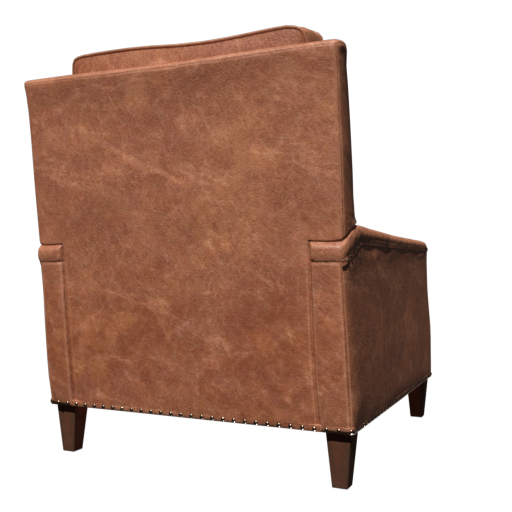
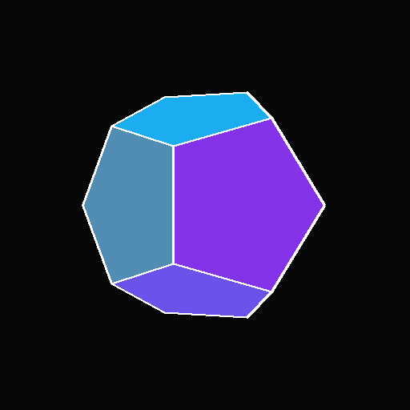

gsplat_core
3D Gaussian Splatting operators for Apple Silicon, built with MLX C++ primitives, custom Metal kernels, and nanobind Python bindings.
Overview
gsplat_core is a CMake-based MLX custom extension project for Apple Silicon. It implements 3D Gaussian Splatting operators using mlx::core::Primitive, custom Metal kernels, and nanobind Python bindings. The project is both an implementation playground for 3DGS on Mac and a template for building native MLX C++ extensions with a repeatable build, test, and profiling workflow.
The current focus is practical engineering: port CUDA-style 3DGS operators to MLX and Metal, compare behavior against exported gsplat fixtures, and keep a tight development loop through Makefile commands, Python smoke tests, and Xcode GPU debugging.
Training Showcase

360 Garden Training
A Mip-NeRF 360 garden scene trained through the COLMAP-style data path. This preview helps inspect how the MLX / Metal pipeline handles a larger real-world capture with textured foliage, depth variation, and many camera views.

Brown Sofa Training
Training preview rendered from outputs/sofa_train. This scene exercises a
real object dataset path and is useful for checking texture, opacity, and geometry behavior
across the MLX / Metal training loop.

Dodecahedron Training
This generated dodecahedron scene is a compact stress test for sharp white edges. It helps reveal whether Gaussian opacity and rasterization preserve clean silhouettes or introduce visible edge bleeding during training.
Image Fitting Training
This single-image fitting example follows the gsplat image tutorial. Starting from one target image, this demo trains with front and rear camera views, then uses a side view to visualize how Gaussians move, change color, and evolve from an alternate angle.
Tutorial: https://docs.gsplat.studio/main/examples/image.html
What It Includes
MLX C++ Extension
Native operators are exposed through MLX primitives and Python bindings, making the project usable from MLX training scripts while keeping performance-critical paths in C++ and Metal.
Metal Kernel Workflow
The repository is structured for Xcode builds, GPU tracing, and low-level debugging, which is essential when developing and validating Metal shading code.
Training Scripts
Includes MLX Python training flows for image fitting, scanner captures, COLMAP / Mip-NeRF 360-style scenes, generated datasets, and SPZ export.
CUDA Parity Fixtures
Reference npz files exported from gsplat help compare the MLX / Metal implementation against known CUDA behavior during development.
Supported Training Targets
- Mip-NeRF 360 / COLMAP scenes, such as garden or bonsai-style scene folders.
- 3D Scanner App captures, exported from iPhone LiDAR scans using the All Data option.
- B075X65R3X brown sofa, from the torch-splatting dataset.
- Generated scenes, including dodecahedron and single-image fitting smoke tests.
- SPZ export, using a pinned spz version for reproducible export behavior.